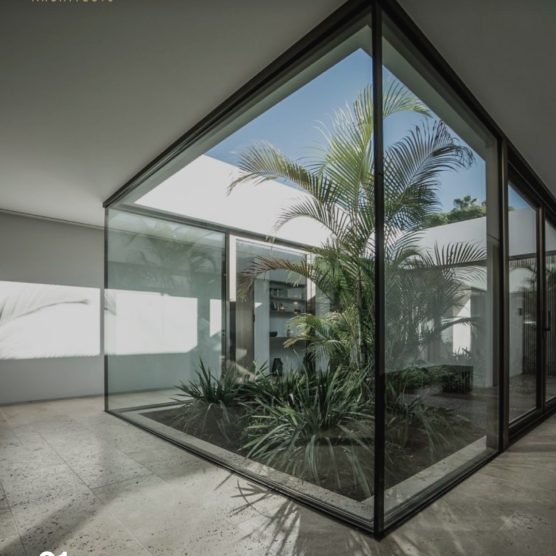
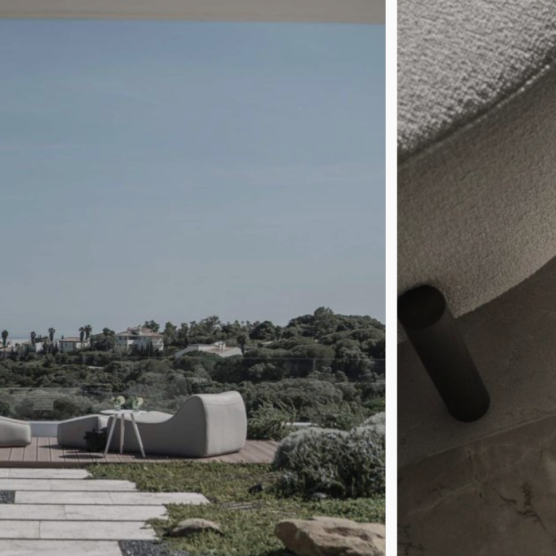
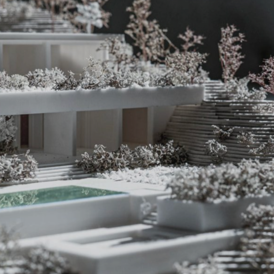
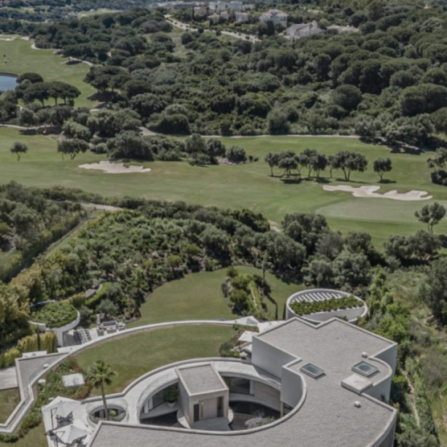

Dubai
real estate
developer
UNLOCK THE POSSIBILITIES OF ELEGANCE AND LUXURY
welux
developer
-
LIGHT
Architecture exists because of light. The need to capture, understand and play the light is one of the keys to the success of our project.
 -
nature
The garden is the mediator between the architecture and the place. The essence of living in nature.
 -
materials
Natural materials with different textures react to light creating spaces that we finally feel when we create architecture.
 -
Place
Natural materials with different textures react to light creating spaces that we finally feel when we create architecture.

Pearl
Villa C50

Manuel R.
Moriche
“The need to capture and understand this light, to play with it and tame it is one of the key to success of our project”
Natural materials with different textures react to light creating spaces that we finally feel when we create architecture.